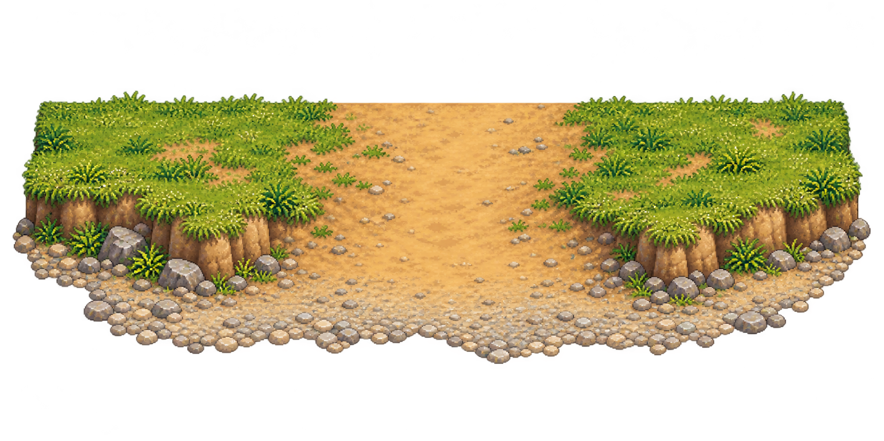

Bãi sỏi · Lối xuống vùng nước cạn r018
Asset mới và bản kiểm tra đi lại riêng. Các vùng va chạm đang dùng tọa độ thử trên màn hình, chưa dựng mesh/collision trong scene 2.5D. Hình không quyết định vùng được đi.
Nhấp vào cảnh, dùng WASD/mũi tên. Lối xuống ở giữa; bờ cao hai bên chặn. Chạm ranh nước sâu sẽ dừng. Dùng nút mũi tên khi xem trên điện thoại.
Thiết kế khu vực
Đất cao → dốc đất thấp → bãi sỏi → nước cạn → nước sâu. Dốc giữa phải đủ rộng, đá lớn và cây nằm ngoài lối. Vùng cạn làm chậm nhẹ; chưa có bơi.
Giới hạn bản thử
Hệ số chậm 0,8 và cao độ 18px là cấu hình kiểm tra, chưa công thức MMORPG đã chốt. Sprite kế thừa bản idle/walk nháp; chưa animation lội nước. Bãi sỏi chưa nối hoàn chỉnh với bộ bờ cao.
Hồ sơ 246Nguồn mỹ thuật mới

Nguồn và prompt imagegen